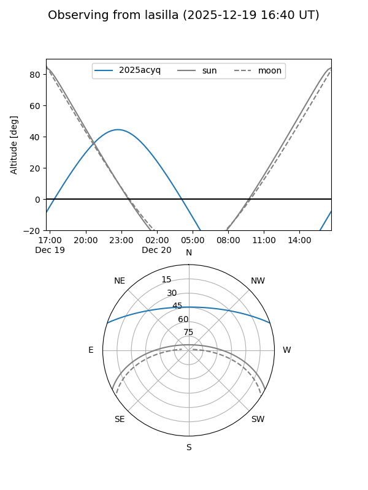
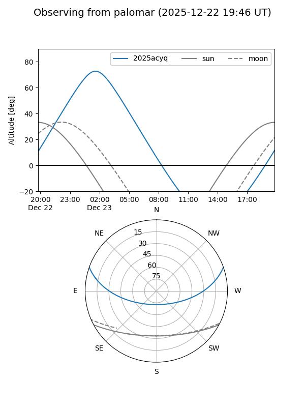
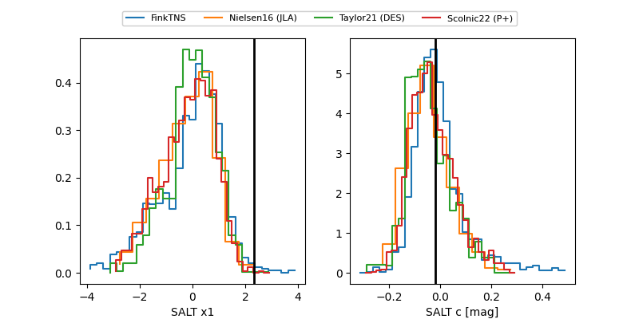

2025acyq
Target 2025acyq at 2025-12-24 16:17
Aliases and brokers:
FINK: fink-portal.org/ZTF25acdxcha
Lasair: lasair-ztf.lsst.ac.uk/objects/ZTF25acdxcha
ALeRCE: alerce.online/object/ZTF25acdxcha
TNS: wis-tns.org/object/2025acyq
YSE: ziggy.ucolick.org/yse/transient_detail/2025acyq
alt names
ZTF25acdxcha (ztf,fink_ztf)
2025acyq (tns,yse)
Coordinates:
equatorial (ra, dec) = 358.6359,+16.01314
equatorial (HMS+DMS) = 23:54:32.61,+16:00:47.30
galactic (l, b) = (103.5243,-44.70396)
Flags:
Photometry:
last ztfg=20.05, ztfr=19.66
5 ztfg, 1 ztfr detections
Lightcurve

Visibility


Additional plots
